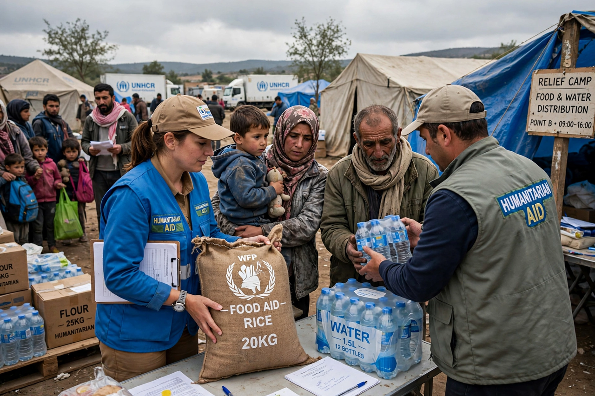

Humanitarian aid
| Humanitarian aid | |
|---|---|
 | |
| Core principles | Humanity, neutrality, impartiality, independence |
| Key coordinators | UN OCHA; Red Cross and Red Crescent Movement |
Humanitarian aid is material and logistic assistance provided to people in need, typically in response to crises such as armed conflict, natural disasters, famine, and epidemics. It differs from development aid, which addresses underlying long-term causes of poverty: humanitarian aid is designed to be short-term relief that saves lives, alleviates suffering, and maintains human dignity.
Principles
The modern humanitarian system is grounded in four principles endorsed by the UN General Assembly: humanity (suffering must be addressed wherever found), neutrality (aid actors must not take sides in hostilities), impartiality (aid is given on the basis of need alone), and independence (humanitarian action must be autonomous from political and military objectives). These principles descend from the work of Henry Dunant, founder of the Red Cross, and are embedded in international humanitarian law through the Geneva Conventions.
Providers and coordination
Aid is delivered by UN agencies such as the World Food Programme, UNICEF, and UNHCR; by the International Red Cross and Red Crescent Movement; by non-governmental organisations such as Médecins Sans Frontières, Oxfam, CARE, and the International Rescue Committee; and by donor governments' agencies. The UN Office for the Coordination of Humanitarian Affairs (OCHA) coordinates international responses, issues consolidated funding appeals, and manages pooled funds such as the Central Emergency Response Fund (CERF). Since the 2005 humanitarian reform, relief work in major emergencies is organised through sectoral "clusters" (food security, health, shelter, water and sanitation, and so on).
Funding and challenges
International humanitarian assistance runs to tens of billions of dollars per year, but UN appeals are chronically underfunded relative to assessed needs, which have grown with protracted conflicts and climate-related disasters. Aid workers face serious security risks, and access to affected populations is often blocked or restricted by parties to conflicts. Debates within the sector concern the "localisation" of aid (shifting resources to local responders), the use of cash transfers instead of in-kind goods, accountability to affected people, and the blurring of relief with military and counter-terrorism agendas.